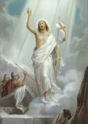
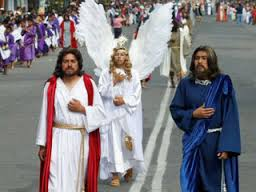
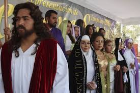

La Semana Santa es la conmemoración anual cristiana de la Pasión, Muerte y Resurrección de Jesús de Nazaret. Es un período de intensa actividad litúrgica dentro de las diversas confesiones cristianas. Da comienzo el Domingo de Ramos y finaliza el Domingo de Resurrección, aunque su celebración suele iniciarse en varios lugares el viernes anterior (Viernes de Dolores) y se considera parte de la misma el Domingo de Resurrección. La Semana Santa va precedida por la Cuaresma, que finaliza en la Semana de Pasión donde se celebra la eucaristía en el Jueves Santo, se conmemora la Crucifixión de Jesús el Viernes Santo y la Resurrección en la Vigilia Pascual durante la noche del Sábado Santo al Domingo de Resurrección.

El Jueves Santo es una fiesta cristiana que se celebra el jueves anterior al Domingo de Resurrección, dentro de la Semana Santa, y que abre el Triduo Pascual. En este día la Iglesia católica conmemora la institución de la Eucaristía en la Última Cena y el lavatorio de los pies realizado por Jesús.
El Viernes Santo es una de las principales celebraciones del Cristianismo, dentro de la denominada Semana Santa. Este día se recuerda la muerte de Jesús de Nazaret. En este día, la Iglesia Católica manda a sus fieles guardar ayuno y abstinencia de carne como penitencia.

Es el nombre que algunas denominaciones cristianas dan al sábado de la semana del primer plenilunio de primavera. Es el tercer día del Triduo Pascual, que concluye con las primeras Vísperas del Domingo de Resurrección culminando así para los cristianos la Semana Santa. Tras conmemorar el día anterior la muerte de Cristo en la Cruz, se espera el momento de la Resurrección. Es la conmemoración de Jesús en el sepulcro y su Descenso al Abismo. Una vez ha anochecido, tiene lugar la principal celebración cristiana del año: la Vigilia Pascual.
El Domingo de Resurrección o de Pascua es la fiesta más importante para todos los católicos, ya que con la Resurrección de Jesús es cuando adquiere sentido toda nuestra religión. Cristo triunfó sobre la muerte y con esto nos abrió las puertas del Cielo. En la Misa dominical recordamos de una manera especial esta gran alegría. Se enciende el Cirio Pascual que representa la luz de Cristo resucitado y que permanecerá prendido hasta el día de la Ascensión, cuando Jesús sube al Cielo.
También llamada Pascua Florida, Domingo de Pascua, Domingo de Resurrección o Domingo de Gloria. Es la fiesta central del cristianismo, en la que se conmemora, de acuerdo con los evangelios canónicos, la resurrección de Jesús al tercer día después de haber sido crucificado. La Pascua marca el final de la Semana Santa, en la que se conmemora la crucifixión y muerte de Jesús. A la Semana Santa le sigue un período de cincuenta días llamado Tiempo pascual, que termina con el Domingo de Pentecostés. La fecha varía entre el 22 de marzo y el 25 de abril. El cristianismo oriental basa sus cálculos en el calendario juliano, por lo que su fecha se sitúa entre el 4 de abril y 8 de mayo. Durante este día se celebran en distintos lugares del mundo procesiones religiosas, así como celebraciones litúrgicas. Las costumbres del Domingo de Resurrección varían en todo el mundo cristiano, pero la decoración de los huevos de Pascua es algo común en muchos países del mundo occidental.
El origen de la Pascua se remonta al año 1513 antes de Cristo, cuando el pueblo judío emprendió su éxodo desde Egipto, hacia la Tierra Prometida. Se celebraba cada año, como recordatorio de la liberación del pueblo hebreo. En la víspera del primer día, se comían hierbas amargas mojadas en vinagre, para recordar la tristeza de la servidumbre. Y se narraban en tono cadencioso cánticos que hacían alusión a las diez plagas de Egipto. El cordero de Pascua era escogido por cada familia. Con el tiempo, la ceremonia de inmolación fue llevada a cabo por la clase sacerdotal. El animal debía ser macho, cordero o cabrito, sano y de un año de edad. Se inmolaba al finalizar el día; y por la noche lo comían con verduras amargas. No estaba permitido romper sus huesos, ni dejar restos de carne. Por esta razón, si la familia no era suficientemente grande para comer un animal ellos solos, los israelitas se reunían en grupos, para cumplir con las prescripciones de orden sagrado. Durante los siete días posteriores al 14 de Nisán (mes del calendario israelita correspondiente a marzo - abril del calendario español), el pueblo hebreo sólo comía pan sin levadura, al que llamaban "ázimo" o "pan de aflicción". Los primeros cristianos celebraban la Pascua de Resurrección a la par cronológica que la Pascua judía, hasta que el Primer Concilio de Nicea (en el 325 d. C.) separó la celebración de la Pascua judía de la cristiana, quitando a esta los elementos hebreos. Sin embargo dejaron el carácter móvil de la fiesta recordando que Cristo resucitó en la Pascua hebrea. Hoy día la Iglesia católica mantiene el carácter móvil de la fecha de Pascua.

Esta fiesta determina el calendario móvil de otras fiestas, el ascenso de Jesús al cielo se celebra 40 días después de Pascua, y Pentecostés 10 días después de la Ascensión. La semana anterior a la Pascua de Resurrección es la Semana Santa, que comienza con el Domingo de Ramos que conmemora la entrada triunfal de Jesús en Jerusalén. La Octava de Pascua es la semana que sucede a este Domingo de Pascua o Domingo de Resurrección. El tiempo pascual o tiempo de Pascua designa, en la liturgia católica, las semanas que van desde el Domingo de Resurrección hasta el de Pentecostés. La expresión «pascua» , de: 'pashé', el paso del señor por Egipto, remite hoy principalmente a la fiesta de la Resurrección, que también es llamada a veces «pascua florida», pero también se usa para referirse a otras tres celebraciones cristianas: la Navidad (25 de diciembre), la Epifanía o Adoración de los Magos (6 de enero) y Pentecostés, la venida del Espíritu Santo (cincuenta días después de la Resurrección). En España, Chile, Cuba y Filipinas, el término Pascua se aplica coloquialmente a la Navidad, mientras que a la Pascua se le llama «Pascua de Resurrección».
La fecha en que se fija la celebración de la Semana Santa depende del cálculo de una fórmula establecida por el emperador romano Constantino el Grande, en el primer Concilio de Nicea, en el año 325 d.C. Cualquiera puede, en virtud de esa fórmula conocer con anticipación la fecha de la Pascua de cada año. Se debe hallar el equinoccio vernal o primer día de primavera en un calendario que incluya las fases lunares. Acto seguido buscamos a que día le corresponde la primera luna llena después de la entrada de la primavera. La Semana Santa caerá justo el domingo siguiente. El motivo del porque tiene que ser el domingo siguiente de la primera luna llena de la primavera tiene su origen en la Pascua judía, que se celebraba el 14 de Nisán. Con eso conmemoraban la salida de Egipto, y es lo que hizo Jesús con los apóstoles en la última cena. El calendario judío era lunar y el 14 de Nisán siempre era la primera luna llena después del equinoccio de primavera. La fecha más tardía posible para Semana Santa seria el domingo 25 de abril, (la próxima vez que caiga en esta fecha será en el año 2038). La más temprana el domingo 22 de marzo, (la próxima en 2285). La mayoría de las veces, la Semana Santa cae durante la primera semana de abril.
Los engrillados son hombres que para pagar una penitencia o agradecer un milagro, recorren más de 3 kilómetros de calles del municipio, en su camino deben ir descalzos, cargando en sus hombros cadenas de más de 100 kilos, con espinas incrustadas en su cuerpo, vistiendo únicamente una capucha y un calzoncilllo negros. Aunado a lo anterior, lo único que pueden consumir durante su marcha son limones, para mantenerse hidratados, mientras que algunas personas les acomodan las cadenas, o por segundos, les ayudan con el peso de éstas. Cada penitente lleva en sus manos una charola en la que quienes atestiguan el acto colocan monedas, al final del día, ese dinero es donado a la iglesia. Este 2016 se espera la participación de más de 80 hombres oriundos del municipio de Atlixco, pero que radican en municipios cercanos como Izúcar de Matamoros, en otros estados, incluyendo Guadalajara, Tlaxcala y Estado de México, e incluso en Estados Unidos.
Otro de los atractivos del municipio de Atlixco durante Semana Santa es la procesión del silencio, que se realizará el próximo viernes santo, y que se ha llevado a cabo desde hace 20 años. El recorrido, que iniciará en la junta auxiliar de Santa Lucía Cosamaloapan y culminará en la comunidad de Nexatengo, tendrá una duración de aproximadamente 3 horas, tiempo en el que participarán aproximadamente 30 mil personas. Quienes este año han decidido cargar las imágenes es importantes deberán haberse confesado, los hombres deberán ir vestidos de negro y las mujeres con falda morada y blusa blanca.
Con esta exposición serán beneficiados comerciantes, artesanos, restaurantes, hoteleros y viveristas, entre otros sectores. En el primer tramo del tapete floral se podrán encontrar flores, mariposas en volumen, así como un sol representativo de la primavera y el logo de la administración actual. En otro recuadro se podrá ver a Cristo Rey en mil metros cuadrados de superficie.
Iztapalapa, una de las 16 delegaciones que constituyen el Distrito Federal, ha sustituido sus canales, chinampas y trajineras con verduras y flores, por ejes viales y el Metro. Tiene en el Cerro de la Estrella, en sus templos, plazas y jardines de Ia cabecera, los espacios sagrados donde se escenifica cada año la representación ritual por excelencia. La coexistencia de Iztapalapa con la gran urbe, no ha logrado borrar Ias viejas costumbres; sus habitantes renuevan sus lazos de amistad, de compadrazgo y vecindad, de pertenencia e identidad con el barrio y con Ia localidad en las distintas fiestas de su calendario, pero es en la Semana Santa cuando éstos aparecen con mayor fuerza. Los moradores de los ocho barrios: La Asunción, San Ignacio, Santa Bárbara, San Lucas, San Pablo, San Miguel, San Pedro y San José, conviven entre la modernidad y la tradición: los que mantienen un ancestral apego a la tierra y los que llegan y demandan un lugar donde vivir. Comparten una costumbre heredada de muchos años, un deseo de mantener la unidad, a través de la cooperación y el esfuerzo colectivo para representar, con gran realismo, la Pasión de Jesucristo en una fiesta que permite la reafirmación y Ia cohesión cultural de sus residentes.
El Domingo de Ramos, las casas y las calles se llenan de flores, las campanas se echan a vuelo, y un ángel con un niño inician la procesión que avanza lentamente. Los cientos de nazarenos llevan adornos de bandas blancas sobre las túnicas moradas; las vírgenes y las mujeres del pueblo adornan sus cabezas con coronas de flores, la Virgen, la Magdalena, llevan atuendos únicos. Por momentos Iztapalapa se transforma en Jerusalén, la multitud se dirige al barrio de San Lucas para que el sacerdote bendiga las palmas, los ramos de manzanilla, romero y laurel (éstas se guardan, pues la gente les atribuye poderes curativos). Hay risas cuando se reciben en la cara las gotas de agua bendita; en el atrio se mezclan los olores de los puestos de comida, los gritos de los vendedores, la música de los juegos mecánicos: el pueblo mezcla lo bíblico con lo actual.
El Jueves Santo, los adornos en las calles son de color blanco y morado; los actores llegan al lugar donde han ensayado; llena de flores y frutas está la cárcel que Cristo ocupará más tarde. De una casa, sale la procesión que inician el niñoy el ángel, después las vírgenes, Jesús, los nazarenos, los sacerdotes y dignatarios romanos, flanqueados por los soldados. La procesión recorre las calles de los ocho barrios, y llega hasta la iglesia del Señor de la Cuevita, donde los presentes quieren tocar la urna y pedir gracias. Los nazarenos, que suman cientos, ahora llevan una corona de espinas con flores en la cabeza. Después de la alocución del obispo en la iglesia, continúa la escena de la última Cena en el Jardín Cuitláhuac; sigue el Lavatorio de los Pies; el Prendimiento, y la Oración del Huerto. Los parlamentos no coinciden con la Sagrada Escritura, se han transformado al correr de los años según el gusto de losparticipantes; lo mismo sucede con otros episodios que los lugareños han agregado.
El Viemes Santo congrega multitudes; la presencia de los encargados de la seguridad y de los primeros auxilios a los visitantes es muy evidente. Llevan a Cristo de la cárcel a la explanada,donde hay una columna; ahí se suceden varios episodios. La gente se estremece conmovída por la representación, cuando Jesús vestido de blanco es azotado con unas ramas teñidas de rojo. El rumor aumenta cuando la muchedumbre inicia el recorrido al Calvario-Cerro. La subida es difícil para los penitentes, actores y espectadores que quieren presenciar la escena; algunos se conforman con los periscopios de cartón adquiridos allí mismo. Todos deben llegar al lugar de las tres caídas, del encuentro con la Verónica, la Samaritana y las santas mujeres. La procesión avanza lentamente, entre los árboles, en medio de sollozos, lamentos, lágrimas, desmayados y gritos de quienes ofrecen su mercancÍa, desde comida y sombreros, hasta refrescos y aparatos para ver mejor el espectáculo. Los soldados romanos, los más de mil nazarenos que llevan sus cruces a cuestas, los judíos, se entremezclan con los espectadores, las santas mujeres, los apóstoles. Todos ellos, que han estado en todos los momentos, llegan hasta el lugar donde están las tres cruces. La actuación del Cristo, que llena de fervor a los espectadores e imparte intensa emoción a todas las ceremonias, llega a la culminación con la Crucifixión. En el lugar sagrado del cerro, en la cruz más grande se coloca a Jesús.
El Lunes Santo, El Papa realiza una conmemoración al papa precedente Juan Pablo II, con una misa solemne a las 6pm siempre en Plaza San Pedro. El Jueves Santo , después de algunos días de retiro, el papa ofrecerá una Misa matutina (9:30am) bastante curiosa: La llaman “La Misa del Crisma”. En esta misa el papa bendice el Olio Santo (crisma) que sirve para uno de los sacramentos de la Iglesia Católica. El significado de esta misa es la unión de la Iglesia Católica como un único cuerpo y sentir al rededor del mundo. En la tarde, a las 6pm, se lleva a cabo una de las misas más bellas: La Misa de la Cena del Señor, donde se recuerda la última cena de Jesús con sus discípulos, donde según la doctrina católica, Jesús instauró los sacramentos, el sacerdocio y el mandamiento del Amor (“amaos los unos a los otros como yo los he amado a ustedes”). Una de las cosas más carismáticas de esta misa es el rito del “Lavado de los pies”. Justamente después de terminada la misa, el Papa lava los pies a doce personas elegidas entre los presentes (que representan a los doce apóstoles de Jesús) mientras se levantan cánticos religiosos.
Una vez terminado el servicio litúrgico, muchas personas se quedan en la Plaza en adoración durante toda la noche hasta el día siguiente. El Viernes Santo. Durante este día no se celebran misas hasta la Vigilia Pascual. Sin embargo en la Basílica de San Pedro, y en las principales Iglesias de Roma cantan muchísimos coros durante todo el día. Al Caer la noche del Viernes, se lleva a cabo uno de las procesiones más solemnes y hermosas del mundo: el famoso “Via Crucis” guiado por el Papa, donde se reconstruye y conmemora el camino doloroso de Jesús hasta su crucifixión. El Via Crucis parte del interior del Coliseo y termina en las Colinas del Palatino.
Sábado Santo Al igual que el Viernes Santo, el día Sábado no se realizan Misas hasta la noche. Este día podréis admirar las iglesias Romanas en modo diferente pues ninguna de ellas tendrá luces encendidas (tampoco velas), y no se entonan cantos. Este silencio viene a simbolizar la espera atenta del Anuncio de la resurrección de Jesús. En la noche (medianoche) se celebra la Misa de Vigilia, celebrada por el Papa en plaza San Pedro. Es una Misa muy hermosa y alegre, donde se bendicen los elementos naturales, y se elevan hermosos cánticos de Alegría. Domingo de Resurrección En este día se celebra la misa más concurrida del mundo: El Papa se asoma en su balcón que da a la Plaza San Pedro a las 10:15 y ofrece el servicio que termina con el famoso “Urbi et Orbi”, el mensaje “para la ciudad y para el mundo” donde el Papa ofrece redención y bendiciones a todos los presentes.

Domingo de Ramos Como no podía ser de otro modo, el Monte de los Olivos -ubicado en el valle de Kidrón, al este de Jerusalén- reúne a peregrinos de los cinco continentes durante el Domingo de Ramos.Estas personas ponen todo su fervor y oraciones en un camino que los lleva desde la iglesia de Betfagé (donde supuestamente se encuentra la roca en la que se apoyó Jesús para subirse a su asno), hasta la misma entrada en Jerusalén, en lo que es la representación del camino que hizo siglos atrás el propio Cristo hasta entrar triunfalmente a la ciudad. Luego se dirigen a la Iglesia de Santa Ana en Getsemaní, o ingresan a la ciudad a través de las murallas por la Puerta de San Esteban.
Los momentos más emotivos y llamativos se dan el Jueves Santo, día en que los cristianos recuerdan la Última Cena de Cristo, en la que instauró el sacramento de la Eucaristía y tras la cual fue traicionado por Judas. Ese día se celebra una misa en el Santo Sepulcro, una iglesia que comparten los católicos, ortodoxos y armenios. Allí se realiza el lavatorio de pies, tal y como hizo Jesús con sus apóstoles.

El Viernes Santo por la mañana todos los grupos que se han dado cita en Israel hacen una peregrinación en Vía Crucis por las callejas empedradas de la capital, siguiendo el camino que lleva hasta el monte Gólgota (Calavera), y haciendo las estaciones penitenciales que recuerdan los distintos momentos del camino a la cruz, incluyendo las caídas.
Las celebraciones religiosas en Mompox se remiten a la época en que las personas adineradas donaban las joyas, altares e imágenes, buscando expiar sus pecados y lograr la salvación eterna. Por esta razón, el ajuar religioso en Mompox demuestra una fervorosa vocación por parte de los ciudadanos. Todos los años, durante la Semana Santa, los pobladores de Mompox desempolvan las joyas para adornar las figuras de los santos que desfilan en largas procesiones por las calles, y así conmemorar la muerte de Cristo. Miles de personas acuden a esta ciudad para observar o participar en los eventos y procesiones de la Semana Mayor, al tiempo que disfrutan de la belleza arquitectónica en las calles coloniales y del arte plasmado en los templos
Popayán se destaca por ser un lugar de fe y la Semana Santa es una de las celebraciones más importantes. Cada año se llevan a cabo seis procesiones: una diurna, el domingo de Ramos, y las otras cinco nocturnas; martes, miércoles, jueves, viernes y sábado santos. El recorrido de las procesiones cubre en total 23 cuadras. Las imágenes sagradas se constituyen en el elemento principal de las diferentes procesiones y se utilizan para recrear los personajes y escenas de la pasión, muerte y resurrección de Jesucristo. La conmemoración de la Semana Mayor está precedida por un pregón a través del cual se dan a conocer las actividades programadas. Entre ellas se encuentran las procesiones chiquitas, en las que participan niños de 6 y 12 años y el festival de música religiosa, que congrega grupos especializados en este género provenientes de diferentes lugares de Colombia y el mundo. Además, cada dos años, en el mes de agosto, se lleva a cabo en Popayán el Congreso Internacional de Cofradías, Hermandades y Juntas de Semana Santa.
La Semana Santa en Pasto ha tenido un carácter místico sacro, en donde el pueblo se integra con fe y devoción para participar en los rituales propuestos por la iglesia. La antesala a la festividad de comunión espiritual comienza con la procesión del Domingo de Ramos en la que cada párroco acuerda con sus feligreses el recorrido y el ritual eucarístico. Además, desde hace algunos años existen programaciones culturales alternas durante la Semana Santa en Pasto. Por ejemplo, en los principales templos de la ciudad se realiza el festival de Música Sacra y también se llevan a cabo exposiciones de arte religioso.